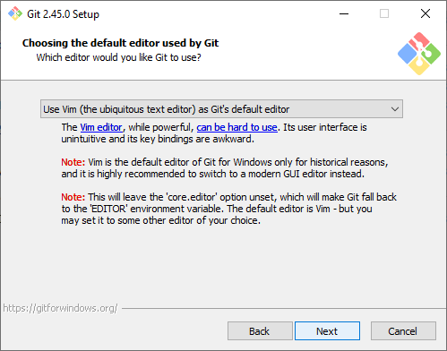

Git y Github
¿Qué es Git?
Git es un sistema de control de versiones que se utiliza para rastrear cambios en archivos de código fuente durante el desarrollo de software. Fue creado por Linus Torvalds en 2005 y se ha convertido en una herramienta fundamental para los desarrolladores en la gestión de proyectos de código abierto y privado.
¿Qué es Github?
Es una plataforma en línea que permite a los desarrolladores colaborar en proyectos, alojar repositorios de código fuente, realizar un seguimiento de problemas, realizar revisiones de código y mucho más. GitHub se ha convertido en un lugar central para el desarrollo de software colaborativo y el intercambio de código entre equipos de desarrollo en todo el mundo.
Creación de cuenta de Github
-
Ingresa al sitio de Github

-
Da click en el botón "Sign Up"
- Ingresa tu correo y da click en "Continue"

- Ingresa una contraseña y da click en "Continue"

- Elige un nombre de usuario y da click en "Continue"

- Si quieres suscribirte al newsletter habilita la casilla, de lo contrario déjala en blanco, y da click en "Continue".

- Resuelve el CAPTCHA y da click en "Submit"
-
Ingresa a tu correo electrónico y copia el código de autenticación

- Ingresa tu correo y da click en "Continue"
-
Serás redirigido a la página de "Login" donde podrás ingresar por primera vez a tu cuenta

-
Personaliza tu cuenta respondiendo a las preguntas que se muestran a continuación.

-
Selecciona la cuenta gratuita dando click en "Continue for free"

-
Si has podido seguir la guía hasta este punto, habrás ingresado al dashboard de tu cuenta.

Guía de Instalación de Git
-
Accede al sitio oficial de Git.

-
Selecciona tu sistema operativo en el botón "Download for OS" y serás redirigido a la página con los instaladores correspondientes.
Página de Windows
Página de Mac

Instalación en Mac
La instalación en Mac se puede realizar fácilmente a través de gestores de paquetes como
homebrew. Sin embargo, esta opción no está cubierta en esta guía. -
Descarga el instalador adecuado para tu sistema desde esta página.
-
Busca el instalador en tu explorador de archivos.
-
Ejecuta el instalador como administrador.
-
Acepta el acuerdo de licencia.
-
Elige la ruta de instalación.
-
Deja seleccionados los componentes por defecto.
-
Mantén la configuración predeterminada para los accesos directos.
-
Selecciona tu editor de texto preferido; se sugiere Vim.

-
Para la configuración inicial, selecciona "Let Git Decide".

-
Utiliza la línea de comandos y el software de terceros como ámbito de uso para Git.

-
Usa el ssh.exe incluido con Git seleccionando "Use bundled OpenSSH".
-
Para conexiones HTTPS, elige "OpenSSL library".

-
Deja la opción por defecto para los finales de línea en los archivos de texto.

-
Selecciona "MinTTY" como el emulador de terminal para trabajar con Git.
-
Configura la conducta por defecto para
git pullcomoFast-forward on merge.
-
Usa el
Git Credential Manager. -
Habilita el
file system caching.
-
No actives las opciones experimentales y haz clic en "Install".
-
Espera a que finalice la instalación.

-
Al terminar, activa la opción "Launch Git Bash" y desactiva "View Release Notes".
-
Se abrirá una terminal (MinTTY) que será referida como
Git Bash.
Vincular Git con Github
Verificar nuestras claves ssh
Para verificar que claves ssh tenemos en nuestro equipo ejecutemos el siguiente comando dentro de nuestra Git Bash.
-
En caso de que no exista el directorio recibirás el mensaje de error
No such file or directory, para crear el directorio ejecuta el siguiente comando: -
En caso de que el directorio exista pero no tengas claves ssh la salida del comando será similar a esta:

-
En caso de que sí cuentes con claves ssh previas la salida del comando será similar a esta:

Y podrás saltar a la sección copia tu clave pública de SSH.
Creación de nuevo conjunto de claves
Las claves SSH siempre se generan como un par de claves, una pública (id_rsa.pub) y una privada (id_rsa).
Clave Privada
Es extremadamente importante que nunca reveles tu clave privada, y que sólo uses tu clave pública para cosas como la autenticación de GitHub.
Generemos un nuevo par de claves con el comando:
Ejemplo:
-
Nos preguntará si queremos personalizar el nombre del fichero que almacene la clave privada, nosotros lo dejaremos con el nombre por defecto, entonces solo damos
ENTER.
-
A continuación preguntará si queremos proteger nuestra clave ssh con una frase, nosotros la dejaremos sin esa protección y daremos en
ENTERsin escribir nada.
-
Confirmamos volviendo a dar
ENTER -
Veremos el siguiente mensaje que confirma la generación exitosa de nuestras claves.

Confirmemos que existan nuestras claves con el comando
Agrega tu clave SSH a ssh-agent
SSH-Agent permite autenticar conexiones ssh recordando las claves privadas del usuario.
Primero, asegúrate de que ssh-agent se está ejecutando con:
MAC/Linux

Windows
Una vez hayas visto que el proceso está funcionando, agrega tu clave privada a ssh-agent con el comando:
Copia tu clave pública de SSH
A continuación, tienes que copiar tu clave pública de SSH en el portapapeles.
Imprime el contenido de tu clave pública en la consola con:

Luego resalta y copia la salida.
Agrega tu clave SSH pública a GitHub
Ve a la página de configuración de tu GitHub
Haz clic en el botón "New SSH key"

Crea una nueva clave de tipo Authentication Key, coloca el título con el que identifiques a tu clave, en este caso nosotros solo usaremos esa clave en nuestra Windows-PC, así que la identificaremos de esa manera y en key pegaremos el contenido de la clave que copiamos en el paso anterior.

Después de dar click en "Add SSH key", nos pedirá confirmar nuestra contraseña

Si todo se realizó correctamente veremos que la clave se añadió exitosamente y la veremos en el listado de claves.
Prueba la autenticación
Para probar que nuestra configuración sea correcta establecemos una conexión SSH con el servidor de GitHub mediante el comando:
Nos pedirá añadir a los servidores de github al listado de hosts conocidos, escribimos yesy damos ENTER.

Si la conexión se estableció correctamente veremos un mensaje como el siguiente